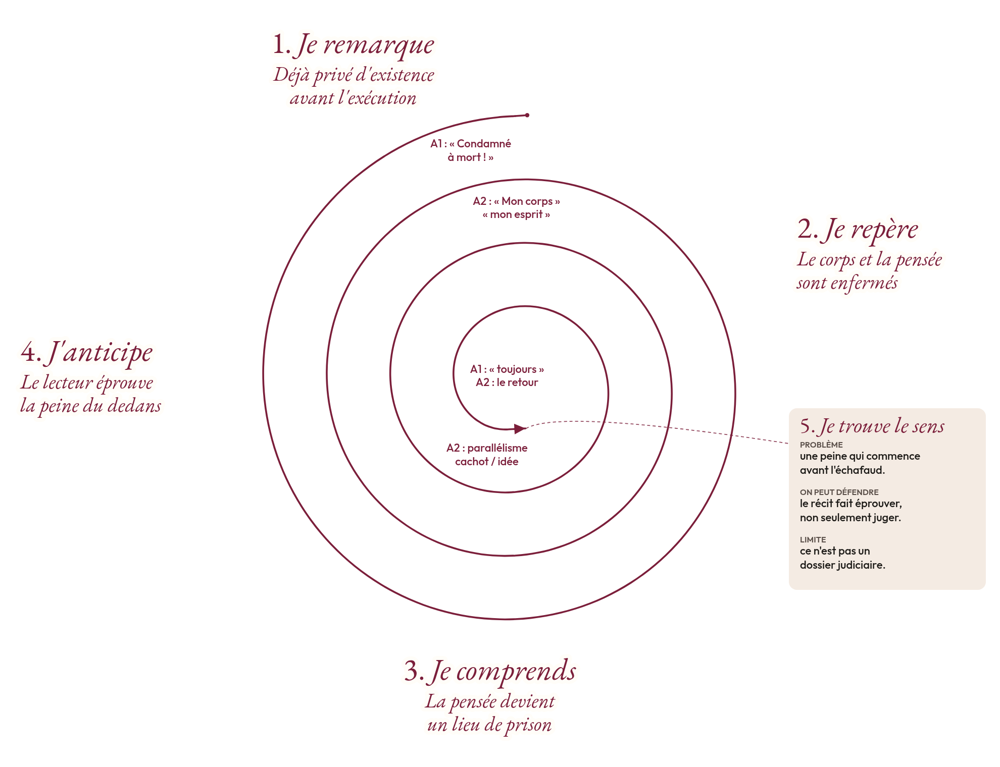
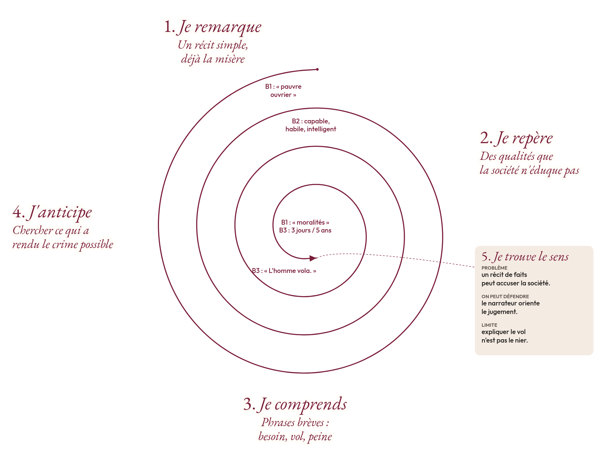
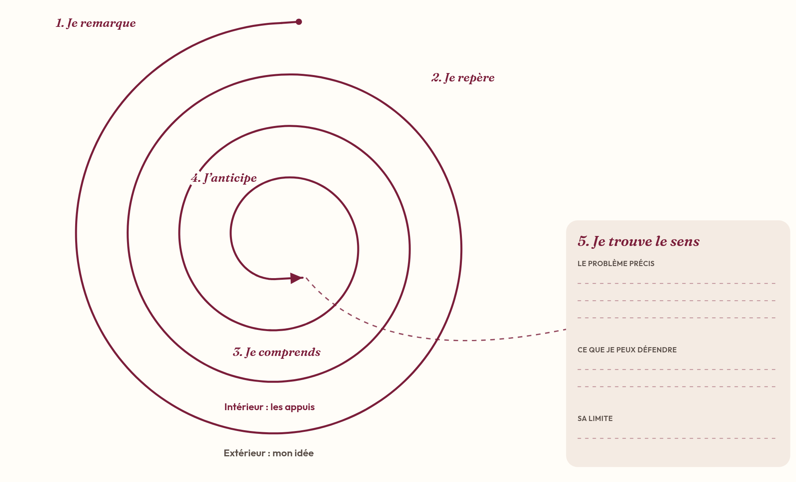

Bac technologique · Première et Terminale · Français · Lycée général et technologique
Victor Hugo et la justice
Le Dernier Jour d'un condamné (1829), Claude Gueux (1834). Lire pour interroger le jugement.
Sans JavaScript, toutes les séances restent visibles à la suite.
Présentation
Fiche de présentation, à afficher ou à imprimer (objectifs, épreuves, déroulé, évaluations, téléchargements).
Une version de cette séquence, adaptée au baccalauréat professionnel, est également disponible.

Problématique. Comment la littérature transforme-t-elle notre manière de juger, sans supprimer la difficulté de juger ?
Une histoire peut-elle changer une loi ? Cette question ouvre la séquence. Elle ne suppose pas que la littérature possède, à elle seule, le pouvoir de transformer les institutions. Elle invite à examiner ce qu'un récit peut modifier en amont : une manière de voir, de nommer, de ressentir et de juger.
Les deux œuvres sont de Victor Hugo : Le Dernier Jour d'un condamné (1829) et Claude Gueux (1834). Dans l'une, le lecteur entre dans une conscience enfermée. Dans l'autre, il suit une histoire que le narrateur organise pour mettre en accusation le fonctionnement social. Les élèves étudient les deux récits, puis peuvent en choisir un pour l'oral, selon le statut effectivement donné aux œuvres dans le projet annuel.
Le rattachement principal est l'objet d'étude « Le roman et le récit du Moyen Âge au XXIe siècle », au programme de français de Première du lycée général et technologique (BO spécial n° 1 du 22 janvier 2019, dans sa version modifiée). Les dates de 1829 et 1834 interdisent de présenter ces textes comme les œuvres intégrales de « La littérature d'idées du XVIe siècle au XVIIIe siècle ». Leur force argumentative ne change pas leur inscription chronologique.
Deux problématiques conservées
Pour Le Dernier Jour d'un condamné : « Comment l'écriture à la première personne transforme-t-elle une peur intime en combat universel ? »
Pour Claude Gueux : « En quoi la littérature démontre-t-elle que la société fabrique les criminels qu'elle punit ? » Le verbe « démontre » désigne ici une ambition argumentative du récit. Il ne signifie pas qu'une œuvre littéraire constitue une preuve scientifique de tous les crimes.
Deux idées force
Le Dernier Jour d'un condamné. Hugo ne demande pas d'abord au lecteur de décider si le condamné mérite sa peine : il lui fait éprouver ce que cette peine fait à une conscience.
Claude Gueux. Hugo ne nie pas le crime : il conteste qu'un jugement sur le crime suffise à épuiser la vérité d'une existence.
La spirale de Gorse
La spirale de Gorse est la méthode de Madame Carole Paoli Pompougnac. Son nom honore la grand-mère de son mari. Elle a cinq étapes, toujours dans cet ordre : Je remarque, Je repère, Je comprends, J'anticipe, Je trouve le sens. Le schéma est une ligne ronde, ample, en bordeaux. L'idée se place à l'extérieur de chaque tour ; les preuves (mots, numéros de lignes, chapitres) se placent à l'intérieur. La pointe n'est pas un centre : on y formule un problème, pas un mot isolé tel que « justice ».
« J'anticipe » ne signifie pas deviner la suite de l'histoire. Il s'agit de prévoir les conséquences d'un choix d'écriture, puis de vérifier ou de corriger cette hypothèse. On ne saute pas à la pointe. Savoir que Hugo est contre la peine de mort n'est pas encore une lecture du passage.



Édition de référence
Les textes sont cités d'après les Œuvres complètes de Victor Hugo, texte établi par Gustave Simon, Imprimerie nationale, Ollendorff, 1910, disponibles sur Wikisource, Le Dernier Jour d'un condamné et Claude Gueux. Les premières publications restent 1829 et 1834 : 1910 désigne l'édition utilisée pour vérifier le texte. Hugo est dans le domaine public : les extraits sont donnés largement, avec le chapitre.
Séance 1. Une histoire suffit-elle à nous faire juger autrement ?
Tour 1 de la spirale de Gorse : une première impression, déjà justifiée par le texte.
Question de travail. Une histoire suffit-elle à nous faire juger autrement ?
Séance de 55 minutes, conduite sur 52, avec un point d'arrêt et une sortie de secours de huit minutes. Chaque élève laisse une trace écrite, prend la parole, et emporte un devoir.
Fiche professeur
Durée : 55 minutes, dont 52 minutes planifiées.
Supports :
- Texte A, unités A1 et A2.
- Texte B, unités B1 à B3.
- Fiche vierge de la spirale de Gorse.
- Fiche diagnostique ci-dessous.
Question :
Qu'est-ce qu'un récit nous fait regarder que le mot « condamné » ou le mot « voleur » ne nous fait pas voir ?
Objectifs :
- Identifier une différence d'énonciation entre les deux textes.
- Distinguer observation, preuve et interprétation.
- Produire une première justification.
- Repérer les besoins en lecture, en langue et en expression orale.
Matériel à préparer :
- Une copie lisible des extraits par élève.
- Une fiche de réponse séparée.
- Des cartes vierges.
- Un espace distinct pour les corrigés.
L'évaluation diagnostique n'a pas pour fonction de sanctionner une connaissance de Hugo qui n'a pas encore été enseignée.
Déroulement sur 52 minutes
| Temps | Étape | Travail |
|---|---|---|
| 0 à 5 min | Entrée individuelle | Répondre à la question générale |
| 5 à 10 min | Lecture et première parole | Lecture des deux supports ; échange en binôme |
| 10 à 21 min | Diagnostic écrit | Réponses individuelles |
| 21 à 31 min | Retour guidé au texte | Premières étapes de la spirale de Gorse |
| 31 à 41 min | Langue | Lexique, phrase non verbale, justification |
| 41 à 47 min | Trace écrite | Comparaison rédigée et mise en voix |
| 47 à 52 min | Mémorisation et bilan | Cartes, phrase de sortie et devoirs |
Étape 1 : une première réponse sans texte
Consigne :
Répondez en trois phrases : « Une histoire peut-elle changer notre manière de juger quelqu'un ? » Vous pouvez répondre oui, non ou partiellement. Donnez une raison.
Amorce :
« Une histoire peut modifier notre jugement parce que… Cependant… »
Note pour le professeur :
Ne pas corriger immédiatement les opinions. Relever les distinctions spontanées : comprendre et excuser ; connaître et supposer ; être ému et avoir raison.
Étape 2 : lire, puis parler à deux
Le professeur lit A1 et A2. Les élèves lisent silencieusement B1 à B3.
Consigne orale :
- Élève A : indiquez ce qui vous frappe dans le texte A.
- Élève B : indiquez ce qui vous frappe dans le texte B.
- Chacun doit citer au moins un mot.
- Vous disposez chacun de quarante-cinq secondes.
Amorces :
« Dans le premier texte, je suis frappé par… »
« Dans le second texte, le détail qui oriente mon regard est… »
Fiche élève : diagnostic
Nom : ............................................................
Exercice 1. Identifier la voix
a. Dans le texte A, qui parle ? Justifiez par un indice.
b. Dans le texte B, le personnage principal raconte-t-il lui-même son histoire ? Justifiez.
Exercice 2. Relever sans commenter trop vite
a. Recopiez un élément qui montre que l'enfermement est aussi mental.
b. Recopiez deux qualités attribuées à Claude.
c. Recopiez les deux durées mises en regard dans B3.
Exercice 3. Passer du procédé à l'interprétation
Expliquez la répétition de « toujours » dans A1.
Votre réponse doit comporter :
- le mot observé ;
- son effet ;
- une idée sur l'expérience du personnage.
Amorce :
« La répétition de… donne l'impression que… Ainsi… »
Exercice 4. Ne pas confondre deux affirmations
Expliquez la différence entre :
- « Le texte indique pourquoi Claude a volé. »
- « Le texte affirme que voler est toujours juste. »
Exercice 5. Formuler une première comparaison
En quatre à six lignes, répondez :
Les deux textes nous rapprochent-ils de leur personnage de la même manière ?
Utilisez « tandis que » ou « alors que ».
Corrigé, à afficher ou à masquer
Correction séparée du diagnostic
Exercice 1
a. Le condamné parle à la première personne. Les formes « j'habite », « je suis » et « mon corps » le montrent.
b. Non. Le narrateur présente Claude à la troisième personne : « un homme nommé Claude Gueux », « il ». Le « je » de « Je dis les choses » appartient au narrateur qui raconte, non au personnage présenté. Wikisource
Erreur fréquente :
« Il y a “je”, donc Claude raconte. »
Redirection :
« À qui renvoie exactement chaque pronom ? Le personnage est-il nommé comme “je” ou comme “il” ? »
Exercice 2
a. « mon esprit est en prison dans une idée ».
b. Deux réponses parmi « capable », « habile », « intelligent ».
c. « trois jours » et « cinq ans ». Wikisource
Exercice 3
Réponse attendue :
La répétition de « toujours » donne l'impression que la pensée de la mort accompagne le personnage sans interruption. Elle transforme son attente en enfermement intérieur.
Approfondissement :
Cette continuité semble supprimer les intervalles dans lesquels une autre pensée pourrait apparaître. La répétition représente donc une occupation de la conscience. Wikisource
Exercice 4
Réponse attendue :
Expliquer pourquoi Claude a volé consiste à rechercher les circonstances de cet acte. Cela ne revient pas à affirmer que tous les vols sont justes. Le passage raconte une situation particulière et nomme explicitement le vol.
Approfondissement :
L'élève distingue une explication causale, une justification morale et une éventuelle qualification juridique. Ces trois opérations ne se confondent pas. Wikisource
Exercice 5
Proposition :
Les deux textes rapprochent le lecteur de leur personnage, mais par des moyens différents. Dans le premier, le condamné exprime directement son enfermement et sa peur. Dans le second, un narrateur présente les qualités de Claude et les circonstances qui précèdent le vol. L'un fait entrer dans une conscience, tandis que l'autre organise une histoire qui conduit à rechercher des causes. Wikisource
Grille diagnostique du professeur
Chaque critère est positionné de 0 à 2. Le total sur 10 sert au repérage des besoins ; il n'impose pas une note comptabilisée.
| Critère | 0 | 1 | 2 |
|---|---|---|---|
| Compréhension | Contresens important | Sens global compris | Distinctions précises |
| Énonciation | Voix confondues | Repérage partiel | Narrateur et personnage distingués |
| Preuves | Aucune référence | Citation peu exploitée | Référence exacte et utile |
| Interprétation | Opinion sans analyse | Effet formulé | Forme, effet et enjeu reliés |
| Langue | Phrases difficiles à comprendre | Expression compréhensible mais fragile | Lexique précis et syntaxe maîtrisée |
Observation orale complémentaire :
- L'élève prend-il son tour de parole ?
- S'appuie-t-il sur un mot du texte ?
- Peut-il reformuler après une question ?
Construire la première lecture avec la spirale de Gorse
Le professeur inscrit :
« Je remarque que le premier personnage parle lui-même, tandis que le second est présenté par un narrateur. »
Questions successives :
- Je remarque : « Quelle différence percevez-vous entre les deux voix ? »
- Je repère : « Quels pronoms permettent de vérifier ? »
- Je comprends : « Que pouvons-nous connaître directement dans chaque cas ? »
- J'anticipe : « Quel type de lecture chaque ouverture semble-t-elle préparer ? »
- Je trouve le sens : « Pour juger quelqu'un, suffit-il de le désigner par son acte ou son statut ? »
La réponse finale reste provisoire. Les séances suivantes devront l'éprouver, notamment face à la violence effectivement commise dans Claude Gueux.
Vocabulaire : nommer précisément
| Mot | Définition de travail |
|---|---|
| Condamnation | Décision qui prononce une peine ; dans le texte A, le personnage en éprouve les conséquences |
| Captif | Privé de liberté |
| Galetas | Logement pauvre situé sous les toits |
| Narrateur | Voix qui prend en charge le récit |
| Énonciation | Manière dont une parole est produite et adressée |
| Interprétation | Proposition de sens construite à partir d'indices |
| Nuancer | Préciser une affirmation en en limitant la portée |
Lexique pour analyser :
- « suggère » plutôt que « prouve » lorsque la preuve n'est pas complète ;
- « met en regard » pour décrire un rapprochement ;
- « cependant » pour introduire une limite ;
- « parce que » pour justifier ;
- « tandis que » pour comparer.
Exercice lexical
Complétez avec : narrateur, interprétation, captif, cependant.
- Le condamné se présente comme un homme … .
- Dans Claude Gueux, le … intervient dans le récit.
- Une … doit être justifiée par le texte.
- Le récit explique les circonstances ; …, il ne supprime pas l'acte.
Correction :
- captif ;
- narrateur ;
- interprétation ;
- cependant.
Syntaxe : phrase verbale et phrase non verbale
Observation :
« L'homme vola. »
Cette phrase possède un verbe conjugué.
« Pas de feu, ni de pain dans le galetas. »
Cette phrase ne possède pas de verbe conjugué. Dans ce contexte, sa brièveté contribue à faire entendre le manque. Wikisource
Exercice 1. Classer
Indiquez « verbale » ou « non verbale ».
a. « Maintenant je suis captif. »
b. « Condamné à mort ! »
c. « L'homme vola. »
d. « Pas de feu, ni de pain dans le galetas. »
Correction :
a. Verbale.
b. Non verbale.
c. Verbale.
d. Non verbale. Wikisource
Exercice 2. Transformer
Reformulez la phrase suivante avec un verbe conjugué :
« Pas de feu, ni de pain dans le galetas. »
Correction possible :
« Il n'y avait ni feu ni pain dans le galetas. »
Exercice 3. Comparer les effets
Quelle différence percevez-vous entre les deux formulations ?
Correction possible :
La phrase verbale explique la situation de manière plus développée. La phrase non verbale est plus brève et plus abrupte. Dans l'incipit, elle concentre l'attention sur les éléments absents.
Exercice 4. Justifier à l'oral
Complétez puis dites votre phrase à votre partenaire :
« La phrase non verbale attire l'attention sur… parce que… »
Réponse possible :
« La phrase non verbale attire l'attention sur le manque parce qu'elle énumère directement ce qui est absent. »
Trace écrite
Les deux œuvres déplacent le regard porté sur une personne condamnée. Dans Le Dernier Jour d'un condamné, la première personne donne accès à une conscience envahie par la pensée de la mort. Dans Claude Gueux, le narrateur présente un homme, ses capacités et les circonstances qui précèdent son acte. Lire ne consiste donc pas seulement à ressentir de la pitié : il faut observer comment le récit construit notre jugement. Une interprétation doit toujours s'appuyer sur des indices précis. Wikisource
Chaque élève lit ensuite à son partenaire la phrase qu'il estime la plus importante et justifie son choix.
Cartes de mémorisation fabriquées par les élèves
Méthode :
- Écrire une question courte au recto.
- Donner la réponse au verso.
- Ajouter un exemple.
- Vérifier le verso avant de mémoriser.
- Se tester sans retourner immédiatement la carte.
Modèle 1 :
Recto :
Qu'est-ce qu'un narrateur ?
Verso :
La voix qui prend en charge le récit. Dans l'incipit de Claude Gueux, le narrateur présente Claude à la troisième personne.
Modèle 2 :
Recto :
Comment justifier une interprétation ?
Verso :
J'énonce une idée, je cite un indice, puis j'explique le lien entre cet indice et mon idée.
Modèle 3 :
Recto :
Qu'est-ce qu'une phrase non verbale ?
Verso :
Une phrase sans verbe conjugué. Exemple : « Condamné à mort ! » Wikisource
Carte vierge :
Recto, question : ....................................................
Verso, réponse : .....................................................
Exemple : ...............................................................
Corrigé, à afficher ou à masquer
Grille d'autocorrection et nouvelle version
| Critère | Ce que j'ai manqué | Ce que je vais modifier |
|---|---|---|
| Compréhension | J'ai cru que… | Je corrige ainsi… |
| Énonciation | J'ai confondu… | Je distingue maintenant… |
| Preuves | Il manque… | J'ajoute la référence… |
| Interprétation | J'ai seulement affirmé… | J'explique désormais comment… |
| Langue | Ma phrase est imprécise à l'endroit suivant… | Je la réécris ainsi… |
Consigne :
Choisissez votre réponse à l'exercice 3 ou à l'exercice 5. Notez ce qui manque en utilisant la grille du professeur. Rédigez ensuite une nouvelle version. Soulignez l'amélioration principale.
Point d'arrêt
À la minute 31, tous les élèves doivent avoir :
- distingué le condamné qui dit « je » et le narrateur qui présente Claude ;
- relevé une preuve dans chaque texte ;
- compris qu'une explication des causes n'est pas automatiquement une excuse.
Si ces trois acquis restent fragiles, le professeur déclenche la sortie de secours.
Sortie de secours de huit minutes
Cette procédure remplace l'approfondissement restant :
- Deux minutes : entourer un pronom dans chaque texte et identifier la voix.
- Deux minutes : compléter la phrase « Le premier texte…, tandis que le second… ».
- Deux minutes : lire sa réponse au partenaire, chacun son tour.
- Deux minutes : copier une carte de mémorisation et noter le travail à la maison.
Trace minimale :
Les deux récits ne rapprochent pas le lecteur du personnage de la même manière. Le premier fait entendre une conscience ; le second fait examiner une histoire.
Travail à la maison
Pour tous :
- Relire le chapitre I du Dernier Jour d'un condamné dans l'édition utilisée.
- Choisir une phrase qui représente l'enfermement.
- Préparer une explication orale de quarante-cinq secondes.
- Réviser les trois cartes de mémorisation.
Parcours guidé :
« J'ai choisi la phrase… Le mot important est… Il donne l'impression que… »
Approfondissement :
Expliquez en six lignes pourquoi connaître la position générale d'un écrivain ne suffit pas à analyser une page de son œuvre.
Parcours autonome, y compris après une absence
Parcours autonome adapté : reprendre après une absence
Objectif :
Comprendre qui parle et expliquer une différence entre les deux textes.
Étape 1. Lire un exemple corrigé.
Phrase :
« Maintenant je suis captif. »
Réponse modèle :
Le personnage parle lui-même. Le pronom « je » le montre.
Étape 2. Faire l'exercice.
Phrase :
« Un homme nommé Claude Gueux, pauvre ouvrier, vivait à Paris. »
Question :
Le personnage parle-t-il lui-même ?
Correction :
Non. Une autre voix le présente et le nomme.
Étape 3. Lire un deuxième exemple corrigé.
Observation :
Le mot « toujours » revient.
Explication modèle :
Cette répétition donne l'impression que la pensée ne laisse aucun repos.
Étape 4. Compléter.
« Le premier texte fait entendre directement… Le second présente… »
Correction possible :
« Le premier texte fait entendre directement la conscience du condamné. Le second présente Claude et les circonstances de son histoire. »
Étape 5. Parler.
Lisez votre réponse à voix haute. Puis reformulez-la sans la lire.
Étape 6. Vérifier.
- Ai-je distingué les deux voix ?
- Ai-je utilisé un mot du texte ?
- Ai-je expliqué mon idée avec « parce que » ?
- Puis-je redire l'essentiel sans réciter toute la fiche ?
***
© 2026 Madame Carole Paoli Pompougnac · CC BY-NC-SA 4.0
La version accessible complète se trouve dans le livret à télécharger.
Séance 2. Comment une pensée devient-elle une prison ?
Tour 2 de la spirale de Gorse.
Question de travail. Comment une pensée devient-elle une prison ?
Séance de 55 minutes, conduite sur 52, avec un point d'arrêt et une sortie de secours de huit minutes. Chaque élève laisse une trace écrite, prend la parole, et emporte un devoir.
Fiche professeur
Durée : 55 minutes, dont 52 minutes planifiées.
Support : Le Dernier Jour d'un condamné, chapitre I.
Question :
Comment Hugo donne-t-il une forme sensible à une pensée dont le personnage ne peut plus se délivrer ?
Objectifs :
- Analyser la transformation d'une idée abstraite en présence agissante.
- Relier répétitions, négation restrictive et personnification.
- Construire un paragraphe qui associe citation, analyse et interprétation.
- Préparer une lecture expressive sans confondre intensité et surenchère.
Prérequis : distinction entre le narrateur et l'auteur ; premiers repérages sur l'enfermement.
Texte élève
C1 :
Autrefois, car il me semble qu'il y a plutôt des années que des semaines, j'étais un homme comme un autre homme. Chaque jour, chaque heure, chaque minute avait son idée. Mon esprit, jeune et riche, était plein de fantaisies.
C2 :
Maintenant je suis captif. Mon corps est aux fers dans un cachot, mon esprit est en prison dans une idée. Une horrible, une sanglante, une implacable idée ! Je n'ai plus qu'une pensée, qu'une conviction, qu'une certitude : condamné à mort !
C3 :
Quoi que je fasse, elle est toujours là, cette pensée infernale, comme un spectre de plomb à mes côtés, seule et jalouse, chassant toute distraction, face à face avec moi misérable, et me secouant de ses deux mains de glace quand je veux détourner la tête ou fermer les yeux.
C4 :
Elle se glisse sous toutes les formes où mon esprit voudrait la fuir, se mêle comme un refrain horrible à toutes les paroles qu'on m'adresse, se colle avec moi aux grilles hideuses de mon cachot ; m'obsède éveillé, épie mon sommeil convulsif, et reparaît dans mes rêves sous la forme d'un couteau. Wikisource
Les paragraphes C1 et C2 ne sont pas immédiatement consécutifs dans le chapitre : un développement sur les fantaisies de l'imagination les sépare.
Déroulement
| Temps | Étape | Activité |
|---|---|---|
| 0 à 6 min | Réactivation | En binôme, chacun présente sa phrase choisie à la maison |
| 6 à 13 min | Lecture | Écoute du texte, puis annotation individuelle |
| 13 à 25 min | Lecture approfondie | Parcours guidé avec la spirale de Gorse |
| 25 à 36 min | Langue | Vocabulaire et négation restrictive |
| 36 à 46 min | Production | Paragraphe d'analyse, puis lecture au partenaire |
| 46 à 52 min | Stabilisation | Trace écrite, cartes et devoirs |
La spirale de Gorse
| Étape | Travail demandé |
|---|---|
| Je remarque | Comparez l'espace mental d'« Autrefois » et celui de « Maintenant ». |
| Je repère | Entourez les mots qui expriment la diversité, puis ceux qui expriment l'unicité. |
| Je comprends | Expliquez pourquoi la pensée devient le sujet de verbes d'action. |
| J'anticipe | Cherchez si le sommeil permet encore une échappée. |
| Je trouve le sens | Montrez comment la condamnation transforme l'ensemble de l'expérience du personnage. |
Intelligence du texte
Dans C1, la succession « Chaque jour, chaque heure, chaque minute » découpe le temps en unités de plus en plus petites. Pourtant, cette précision ne signifie pas encore l'obsession : chaque unité possède son idée. Le temps contient de la diversité.
C2 oppose à cette richesse une réduction. Le personnage ne manque pas seulement de liberté de mouvement. Il ne peut plus varier les objets de sa pensée. La restriction « ne… plus que » marque à la fois la perte d'un état antérieur et le maintien d'un seul contenu mental.
C3 donne un corps à cette idée. La comparaison avec un « spectre de plomb » associe une apparition inquiétante et une matière lourde. Les « mains de glace » prolongent la personnification : la pensée devient un persécuteur.
Dans C4, l'accumulation des verbes fait de cette présence une puissance mobile. Le personnage cherche à fuir ; la pensée « se glisse », « se mêle », « se colle », « épie ». L'opposition entre l'éveil et le sommeil ne constitue plus une frontière protectrice. L'image finale du couteau introduit la menace dans le rêve lui-même. Wikisource
Exercices de lecture
- Expliquez pourquoi le mot « pensée » ne désigne plus seulement une activité intellectuelle.
- Analysez l'opposition entre « plein de fantaisies » et « une certitude ».
- Préparez une lecture de C2. Indiquez deux pauses et un mot à accentuer.
- Rédigez cinq à sept lignes commençant par :
« L'enfermement du personnage dépasse les murs du cachot, car… »
Vocabulaire et syntaxe
Vocabulaire du texte :
- Captif : privé de liberté.
- Implacable : qui ne se laisse pas fléchir.
- Obsession : pensée qui revient et s'impose.
- Spectre : apparition fantomatique.
Lexique d'analyse :
- « personnifie » ;
- « oppose » ;
- « restreint » ;
- « envahit » ;
- « ne se limite pas à ».
Point de langue : distinguer négation et restriction.
« Je ne pense plus » supprime l'activité de penser. « Je ne pense plus qu'à cela » limite cette activité à un seul objet.
Exercices :
a. Reformulez « Je n'ai plus qu'une pensée » sans employer « ne… que ».
b. Transformez : « Le personnage pense seulement à sa condamnation. »
c. Complétez : « Le narrateur ne décrit pas seulement… ; il montre aussi… »
d. Réemployez oralement « ne… que » pour expliquer une différence entre C1 et C2.
Corrigé, à afficher ou à masquer
Correction séparée
Lecture :
- La pensée devient une présence qui poursuit et agit. Elle reçoit des gestes et des intentions.
- « Plein de fantaisies » présente une multiplicité imaginative ; « une certitude » enferme l'esprit dans un contenu unique.
- Plusieurs lectures sont recevables. On attend une pause après « captif » et une mise en valeur justifiée d'« idée » ou de « condamné à mort ».
- Le paragraphe doit expliquer au moins un procédé, et non seulement affirmer que le personnage souffre. Wikisource
Langue :
a. « Il ne me reste désormais qu'une seule pensée » conserve la restriction, mais la consigne demandait de l'éviter : on préférera « Une seule pensée occupe désormais mon esprit. »
b. « Le personnage ne pense qu'à sa condamnation. »
c. « Le narrateur ne décrit pas seulement une prison matérielle ; il montre aussi un enfermement intérieur. »
d. Exemple : « Autrefois, son esprit accueillait de nombreuses idées ; maintenant, il n'en contient plus qu'une. »
Erreur fréquente : écrire que la personnification « rend le texte vivant ».
Redirection :
« Qui agit ? Sur qui ? Pourquoi est-il inquiétant qu'une pensée possède cette capacité d'agir ? »
Trace écrite
Le chapitre oppose la diversité ancienne de l'imagination à l'unicité présente de l'obsession. La négation restrictive réduit l'espace mental du condamné. La personnification transforme ensuite la pensée en persécuteur. La condamnation ne concerne donc pas seulement un avenir : elle réorganise le présent, les perceptions et jusqu'au sommeil du personnage. Wikisource
Cartes, point d'arrêt et devoirs
Cartes modèles :
- Recto : « Que signifie “ne… que” ? » Verso : « Une restriction. Exemple : il ne pense qu'à sa condamnation. »
- Recto : « Comment analyser une personnification ? » Verso : « Identifier l'élément abstrait, les propriétés humaines attribuées et l'effet produit. »
Carte vierge : question / définition / exemple / référence.
Point d'arrêt, minute 36 : chaque élève doit pouvoir expliquer une restriction et une personnification.
Sortie de secours de huit minutes :
- Deux minutes : choisir une citation.
- Deux minutes : compléter « Cette expression transforme… en… ».
- Deux minutes : expliquer sa réponse au partenaire.
- Deux minutes : conserver la trace et noter les devoirs.
Travail à la maison : enregistrer une minute d'explication de C3 ; réviser les cartes de la séance 1 et les deux nouvelles cartes.
Parcours autonome, y compris après une absence
Parcours autonome adapté
Exemple corrigé :
« ses deux mains de glace » : une pensée reçoit des mains. Elle est personnifiée.
Exercice 1 :
Dans « elle épie mon sommeil », que fait la pensée ?
Correction : elle surveille le personnage comme une présence hostile.
Exemple corrigé :
« Je ne lis que ce livre » signifie « Je lis seulement ce livre ».
Exercice 2 :
Reformulez « Je n'ai plus qu'une pensée ».
Correction : « Une seule pensée occupe désormais mon esprit. »
Bilan à dire :
« Le personnage est enfermé dans un cachot et dans une idée. »
La version accessible complète se trouve dans le livret à télécharger.
Séance 3. Qui regarde qui dans une scène de punition ?
Question de travail. Qui regarde qui dans une scène de punition ?
Séance de 55 minutes, conduite sur 52, avec un point d'arrêt et une sortie de secours de huit minutes. Chaque élève laisse une trace écrite, prend la parole, et emporte un devoir.
Fiche professeur
Support : Le Dernier Jour d'un condamné, chapitre XIII.
Question :
Comment le spectacle de la punition finit-il par atteindre celui qui croyait seulement le regarder ?
Objectifs :
- Étudier le vocabulaire du spectacle.
- Analyser un renversement des positions.
- Comprendre que le condamné n'est pas présenté comme un observateur toujours lucide.
- Formuler une opposition et une concession.
Corpus élève : trois moments du chapitre
D1, au début de la scène :
C'était en effet, pour un reclus solitaire, une bonne fortune qu'un spectacle, si odieux qu'il fût. J'acceptai l'amusement.
D2, description des prisonniers aux fenêtres :
C'étaient les prisonniers, spectateurs de la cérémonie en attendant leur jour d'être acteurs. On eût dit des âmes en peine aux soupiraux du purgatoire qui donnent sur l'enfer.
D3, vers la fin du chapitre :
J'observais ce spectacle étrange avec une curiosité si avide, si palpitante, si attentive, que je m'étais oublié moi-même. Un profond sentiment de pitié me remuait jusqu'aux entrailles, et leurs rires me faisaient pleurer.
D4, après que les forçats ont reconnu le condamné :
Je ne puis dire ce qui se passait en moi. J'étais leur camarade en effet. La Grève est sœur de Toulon. J'étais même placé plus bas qu'eux ; ils me faisaient honneur. Je frissonnai.
D5 :
Oui, leur camarade ! Et quelques jours plus tard, j'aurais pu aussi, moi, être un spectacle pour eux. Wikisource
Ces unités sont prélevées à différents endroits du chapitre. Le professeur raconte brièvement les événements qui les relient : préparation du départ des forçats, ferrage, ronde, reconnaissance du condamné.
Déroulement
| Temps | Étape | Activité |
|---|---|---|
| 0 à 5 min | Révision | Interrogation mutuelle sur les cartes |
| 5 à 13 min | Situation et lecture | Reconstituer les positions dans la cour |
| 13 à 27 min | Analyse | La spirale de Gorse et comparaison des regards |
| 27 à 37 min | Langue | Concession et opposition |
| 37 à 46 min | Oral | Deux interprétations confrontées |
| 46 à 52 min | Bilan | Trace, cartes, devoirs |
La spirale de Gorse
- Je remarque : le vocabulaire semble parfois appartenir à une fête.
- Je repère : « spectacle », « amusement », « spectateurs », « acteurs ».
- Je comprends : la punition devient une représentation, mais les rôles sont instables.
- J'anticipe : le condamné peut devenir à son tour l'objet du regard.
- Je trouve le sens : la scène interroge le plaisir de regarder et la fragilité de la distance entre soi et le condamné. Wikisource
Lecture approfondie
Dans D1, la concession « si odieux qu'il fût » ne supprime pas l'acceptation du spectacle. Le personnage reconnaît l'horreur et consent pourtant à regarder. Son isolement contribue à rendre l'animation désirable.
D2 met en relation deux rôles théâtraux. « En attendant » révèle que la séparation entre spectateurs et acteurs est provisoire. Les prisonniers regardent un destin auquel ils ne sont pas entièrement étrangers.
D3 associe curiosité et pitié. L'accumulation des adjectifs ne permet pas de réduire le regard à une compassion pure. Le lecteur doit entendre une relation mêlée : attraction du spectacle et bouleversement physique.
Dans D4, « camarade » détruit la distance protectrice. L'image de parenté entre la Grève et Toulon rapproche deux destinations pénales. Il faut expliquer aux élèves qu'il s'agit ici de la place d'exécution et du bagne, sans les confondre.
D5 transforme enfin le spectateur en spectacle possible. Le pronom « moi », détaché, fait surgir la reconnaissance personnelle de ce renversement. Wikisource
Exercices
- Pourquoi « le condamné éprouve de la pitié » est-il juste, mais insuffisant ?
- Expliquez « en attendant leur jour d'être acteurs ».
- Quel changement le mot « camarade » provoque-t-il ?
- En binôme, défendez successivement ces deux propositions :
- « Le personnage regarde la souffrance des autres. » - « Le personnage découvre sa proximité avec eux. »
Chaque intervention dure quarante-cinq secondes et comporte une preuve.
Langue : opposition et concession
Vocabulaire :
- Reclus : personne enfermée et isolée.
- Ferrage : pose des fers.
- Avide : qui désire avec intensité.
- Renversement : changement qui inverse les positions.
Lexique argumentatif :
- pourtant ;
- tandis que ;
- bien que ;
- même si ;
- ne se réduit pas à.
Exercices :
a. Associez : « Il éprouve de la pitié » / « sa curiosité demeure intense », avec « pourtant ».
b. Complétez : « Bien que le spectacle soit odieux, … »
c. Transformez avec « tandis que » : « Il observe d'abord. Il devient ensuite l'objet du regard. »
d. Expliquez oralement la différence entre une opposition et une concession à partir de ces exemples.
Corrigé, à afficher ou à masquer
Correction séparée
Lecture :
- Le personnage est aussi attiré par le spectacle ; il ne se tient pas d'emblée à l'écart de la curiosité collective.
- Les spectateurs peuvent subir ultérieurement une peine comparable : le rôle n'est pas une identité stable.
- « Camarade » désigne une communauté de condition que le narrateur ne peut plus tenir à distance.
- Les deux propositions sont compatibles si l'élève explique le mouvement du passage. Wikisource
Langue :
a. « Il éprouve de la pitié ; pourtant, sa curiosité demeure intense. »
b. « Bien que le spectacle soit odieux, il accepte de le regarder. »
c. « Il observe d'abord les autres, tandis qu'à la fin il devient lui-même l'objet du regard. »
d. L'opposition confronte deux éléments ; la concession reconnaît un élément qui aurait pu conduire à une autre conséquence, mais ne l'empêche pas.
Trace écrite
Le chapitre XIII ne présente pas seulement une punition : il analyse une manière de regarder. Le vocabulaire théâtral transforme les prisonniers en acteurs et en spectateurs. Le condamné accepte d'abord cette position, puis découvre qu'il peut devenir le spectacle des autres. Le renversement fait apparaître une communauté de condition derrière la séparation des regards. Wikisource
Mémorisation, secours et travail personnel
Cartes modèles :
- « Concession » : reconnaître un fait qui ne produit pas la conséquence attendue.
- « Renversement du regard » : passage de celui qui regarde à celui qui est regardé.
Carte vierge : terme / définition / citation / effet.
Point d'arrêt, minute 37 : expliquer le passage de « spectacle » à « camarade ».
Sortie de secours, huit minutes : retrouver deux occurrences du lexique théâtral, écrire leur relation, la dire à deux, conserver le bilan.
Devoirs : rédiger six lignes sur cette question : « Peut-on regarder sans être impliqué ? » Utiliser deux références au chapitre, sans transformer la réponse en jugement général sur tous les spectateurs.
Parcours autonome, y compris après une absence
Parcours autonome adapté
Exemple corrigé :
Un spectateur regarde. Un acteur participe à ce qui est montré.
Exercice :
Le condamné reste-t-il seulement spectateur ?
Correction :
Non. Il comprend qu'il peut devenir lui-même un spectacle.
Exemple corrigé :
« Il sait que le spectacle est horrible ; pourtant, il regarde. »
Exercice :
Complétez : « Le condamné éprouve de la pitié ; pourtant… »
Correction possible :
« … il reste attiré par ce qu'il voit. »
La version accessible complète se trouve dans le livret à télécharger.
Séance 4. Comment raconter ce qui semble impossible à supporter ?
Question de travail. Comment raconter ce qui semble impossible à supporter ?
Séance de 55 minutes, conduite sur 52, avec un point d'arrêt et une sortie de secours de huit minutes. Chaque élève laisse une trace écrite, prend la parole, et emporte un devoir.
Fiche professeur
Support : Le Dernier Jour d'un condamné, chapitre XLVIII.
Question :
Comment l'écriture fait-elle sentir la perte de maîtrise d'un personnage qui continue pourtant à observer ?
Objectifs :
- Étudier l'opposition entre le personnage et la foule.
- Relier accumulation, répétition et perception.
- Distinguer « on », « ils » et voix passive.
- Préparer une explication linéaire courte.
Texte élève
E1 :
Nous avons pris le fatal quai. Je commençais à ne plus voir, à ne plus entendre. Toutes ces voix, toutes ces têtes aux fenêtres, aux portes, aux grilles des boutiques, aux branches des lanternes ; ces spectateurs avides et cruels ; cette foule où tous me connaissent et où je ne connais personne ; cette route pavée et murée de visages humains… J'étais ivre, stupide, insensé. C'est une chose insupportable que le poids de tant de regards appuyés sur vous.
E2 :
Je vacillais donc sur le banc, ne prêtant même plus d'attention au prêtre et au crucifix.
E3 :
Dans le tumulte qui m'enveloppait, je ne distinguais plus les cris de pitié des cris de joie, les rires des plaintes, les voix du bruit ; tout cela était une rumeur qui résonnait dans ma tête comme dans un écho de cuivre.
E4 :
Mes yeux lisaient machinalement les enseignes des boutiques.
E5 :
Une fois, l'étrange curiosité me prit de tourner la tête et de regarder vers quoi j'avançais. C'était une dernière bravade de l'intelligence. Mais le corps ne voulut pas ; ma nuque resta paralysée et d'avance comme morte. Wikisource
Déroulement
| Temps | Étape | Activité |
|---|---|---|
| 0 à 6 min | Réactivation | Restitution du renversement du regard |
| 6 à 13 min | Lecture | Repérage des sens et des mouvements |
| 13 à 27 min | Analyse | Accumulation, regards et perte de distinction |
| 27 à 37 min | Langue | Agents de l'action et transformations |
| 37 à 46 min | Oral | Explication d'une minute par élève, en binôme |
| 46 à 52 min | Stabilisation | Trace, cartes, devoirs |
La spirale de Gorse
- Je remarque : le personnage perçoit beaucoup de détails, mais affirme ne plus voir ni entendre.
- Je repère : accumulations, négations, adjectifs et références au corps.
- Je comprends : la multiplication des sensations ne produit plus une compréhension maîtrisée.
- J'anticipe : même la volonté de regarder peut échouer.
- Je trouve le sens : le récit fait éprouver une conscience débordée sans cesser de lui donner une voix. Wikisource
Lecture approfondie
Le début d'E1 paraît contradictoire : le personnage dit ne plus voir, puis décrit. Il faut distinguer recevoir des perceptions et parvenir à les organiser.
Les démonstratifs répétés désignent des présences qui semblent se multiplier. Les points-virgules prolongent l'accumulation sans lui donner la tranquillité d'un inventaire. La foule devient un environnement qui ferme l'espace : la route est « pavée et murée de visages humains ».
« Tous me connaissent » et « je ne connais personne » construisent une dissymétrie. Le personnage est identifié, observé et exposé ; il ne peut nouer une relation réciproque avec cette multitude.
E3 efface les distinctions affectives : pitié et joie deviennent un même bruit. E4 détache presque les yeux de la volonté du sujet, avec l'adverbe « machinalement ». Enfin, E5 oppose l'élan de l'intelligence à l'impossibilité du corps. La comparaison « comme morte » anticipe la mort sans raconter encore son accomplissement. Wikisource
Exercices de lecture
- Expliquez pourquoi l'accumulation n'est pas seulement descriptive.
- Analysez « le poids de tant de regards ».
- Pourquoi faut-il distinguer « ne plus entendre » et « ne plus distinguer » ?
- Préparez une explication d'E3 à E5 :
- une phrase pour situer ; - deux observations analysées ; - une réponse à la question de séance.
Langue : qui agit ?
Vocabulaire :
- Tumulte : agitation bruyante.
- Vaciller : perdre sa stabilité.
- Machinalement : sans attention volontaire.
- Dissymétrie : absence de réciprocité ou d'équilibre.
Lexique d'analyse :
- « oppose » ;
- « brouille » ;
- « détache » ;
- « fait obstacle à ».
Précision grammaticale :
- « On l'emmène » : phrase active avec sujet indéfini.
- « Ils l'emmènent » : phrase active avec sujet pronominal.
- « Il est emmené » : phrase passive.
Exercices :
a. Transformez au passif : « La foule observe le condamné. »
b. Transformez à l'actif : « Le condamné est entouré par les gendarmes. »
c. Comparez : « On me conduit » et « Les gendarmes me conduisent ».
d. Complétez : « Le pronom indéfini laisse l'agent moins…, mais la phrase reste à la voix… »
Corrigé, à afficher ou à masquer
Correction séparée
Lecture :
- L'accumulation construit une saturation : elle fait éprouver la difficulté à organiser ce qui est perçu.
- La métaphore donne une force physique aux regards. Être vu devient une pression.
- Le personnage reçoit encore les sons, mais ne peut plus séparer leurs significations.
- L'explication doit montrer le mouvement de la confusion sonore à l'automatisme, puis au refus du corps. Wikisource
Langue :
a. « Le condamné est observé par la foule. »
b. « Les gendarmes entourent le condamné. »
c. La seconde phrase identifie l'agent ; la première le laisse indéfini.
d. « identifié » ; « active ».
Erreur fréquente : appeler « passive » toute phrase dans laquelle le personnage subit une action.
Redirection :
« Cherchez la construction grammaticale, pas seulement la situation du personnage. »
Trace écrite
Le trajet est raconté comme une saturation des perceptions. Les accumulations enferment le condamné dans une foule qui le voit sans qu'il puisse lui répondre. Les oppositions se brouillent : la pitié et la joie deviennent une même rumeur. L'écriture donne ainsi forme à une perte de maîtrise, tout en conservant la singularité de celui qui la subit. Wikisource
Cartes, secours et devoirs
Cartes :
- « Voix passive » : sujet patient, auxiliaire être et participe passé.
- « Accumulation » : multiplication d'éléments dont il faut expliquer l'organisation et l'effet.
Carte vierge : notion / critère de reconnaissance / exemple / effet.
Point d'arrêt, minute 37 : une analyse de l'accumulation et une distinction correcte entre sujet indéfini et voix passive.
Sortie de secours : deux minutes par tâche, choisir une citation, expliquer son effet, la présenter oralement, copier le bilan.
Devoirs : reprendre l'explication orale après écoute ou retour du partenaire ; noter précisément une amélioration.
Parcours autonome, y compris après une absence
Parcours autonome adapté
Exemple corrigé :
« La foule regarde le condamné » devient « Le condamné est regardé par la foule ».
Exercice :
Transformez : « Les gendarmes entourent le condamné. »
Correction :
« Le condamné est entouré par les gendarmes. »
Exemple corrigé :
Recevoir beaucoup de sons ne signifie pas comprendre chaque parole.
Exercice :
Pourquoi les cris de pitié ne réconfortent-ils pas nécessairement le personnage ?
Correction :
Il ne les distingue plus des autres cris.
La version accessible complète se trouve dans le livret à télécharger.
Séance 5. Un récit de faits peut-il être une accusation ?
Tour 5 de la spirale de Gorse.
Question de travail. Un récit de faits peut-il être une accusation ?
Séance de 55 minutes, conduite sur 52, avec un point d'arrêt et une sortie de secours de huit minutes. Chaque élève laisse une trace écrite, prend la parole, et emporte un devoir.
Fiche professeur
Support : l'incipit de Claude Gueux, étudié dans la section 6, prolongé par le portrait.
Question :
Comment le narrateur oriente-t-il le jugement tout en affirmant raconter les faits ?
Cette séance comporte l'évaluation de mi-parcours. Elle mesure le transfert des compétences : repérer une voix, analyser un procédé, construire une interprétation et la nuancer.
Texte complémentaire
F1 :
L'homme fut envoyé faire son temps à la maison centrale de Clairvaux. Clairvaux, abbaye dont on a fait une bastille, cellule dont on a fait un cabanon, autel dont on a fait un pilori. Quand nous parlons de progrès, c'est ainsi que certaines gens le comprennent et l'exécutent. Voilà la chose qu'ils mettent sous notre mot.
F2 :
Claude Gueux, honnête ouvrier naguère, voleur désormais, était une figure digne et grave. Il avait le front haut, déjà ridé quoique jeune encore, quelques cheveux gris perdus dans les touffes noires, l'œil doux et fort puissamment enfoncé sous une arcade sourcilière bien modelée, les narines ouvertes, le menton avancé, la lèvre dédaigneuse. C'était une belle tête. On va voir ce que la société en a fait. Wikisource
Déroulement
| Temps | Étape | Activité |
|---|---|---|
| 0 à 5 min | Réactivation | Une différence entre les deux récits |
| 5 à 12 min | Lecture et langue | Cause, conséquence et chronologie |
| 12 à 27 min | Évaluation | Travail individuel |
| 27 à 38 min | Correction raisonnée | La spirale de Gorse et lecture approfondie |
| 38 à 46 min | Réécriture | Nouvelle version d'une réponse |
| 46 à 52 min | Bilan | Restitution orale, cartes et devoirs |
Langue préparatoire
Vocabulaire :
- Incipit : début d'une œuvre.
- Pilori : dispositif d'exposition publique infamante.
- Portrait : représentation construite d'un personnage.
- Causalité : relation entre une cause et un effet.
Lexique :
- parce que ;
- par conséquent ;
- puis ;
- suggère ;
- ne suffit pas à démontrer.
Exercices :
a. Classez : « puis », « parce que », « par conséquent » : temps, cause ou conséquence.
b. Comparez : « Il manque de travail, puis il vole » et « Il vole parce qu'il manque de travail ».
c. Reformulez sans certitude excessive : « Deux événements se suivent, donc le premier explique entièrement le second. »
Correction :
a. Temps ; cause ; conséquence.
b. La première phrase indique une succession ; la seconde affirme une relation causale.
c. « La succession des événements invite à rechercher un lien, mais ne suffit pas à établir une explication complète. »
Fiche élève : évaluation de mi-parcours
Durée : quinze minutes. Barème sur 20.
- Dans F1, relevez une intervention du narrateur. Expliquez ce qu'elle révèle de sa position. 4 points.
- Analysez l'opposition « honnête ouvrier naguère, voleur désormais ». 4 points.
- Expliquez pourquoi le portrait ne se réduit pas à une description physique. 4 points.
- En six à huit lignes, répondez :
Le narrateur laisse-t-il entièrement le lecteur juger seul ?
Votre réponse doit comporter une citation et une nuance. 5 points.
Langue : précision du vocabulaire et correction des phrases. 3 points.
Amorces :
« Le narrateur semble…, mais… »
« Le choix de… oriente la lecture parce que… »
La spirale de Gorse et lecture approfondie
- Je remarque : le narrateur commente les faits.
- Je repère : « nous », « notre », « On va voir ».
- Je comprends : le récit oppose une identité passée à une désignation présente et annonce une responsabilité sociale.
- J'anticipe : l'histoire va interroger ce qui transforme l'homme.
- Je trouve le sens : l'apparence factuelle n'exclut pas une construction argumentative. Wikisource
Dans F1, les trois transformations de lieux religieux en lieux d'enfermement ou de sanction construisent un parallélisme accusateur. Le mot « progrès » fait l'objet d'un conflit de définition : le narrateur refuse de reconnaître dans ces transformations le sens qu'il donne à ce terme.
Dans F2, le portrait retarde la réduction du personnage à « voleur ». « Digne », « grave », « doux » et « belle tête » composent une appréciation. La dernière phrase annonce l'enquête : le corps représenté devient aussi le lieu où seront visibles les effets de la société. Wikisource
Corrigé, à afficher ou à masquer
Correction et grille professeur
| Critère | Attendu | Points |
|---|---|---|
| Voix narrative | Intervention exacte et position expliquée | 4 |
| Opposition temporelle | Ancien statut, nouveau statut et transformation analysés | 4 |
| Portrait | Valeurs et orientation du regard identifiées | 4 |
| Réponse argumentée | Idée, preuve, analyse, nuance | 5 |
| Langue | Lexique réemployé, phrases construites, citations intégrées | 3 |
Réponses attendues :
- « Quand nous parlons de progrès » ou « On va voir ce que la société en a fait » montrent que le narrateur interprète et annonce son orientation.
- L'opposition empêche de faire du vol une essence immuable. Elle inscrit une transformation dans le temps.
- Le portrait attribue une dignité et une valeur au personnage.
- Le lecteur participe à l'interprétation, mais à partir d'un récit déjà organisé et commenté. Wikisource
Approfondissement : distinguer une liberté de lecture et une absence d'orientation. Un texte peut solliciter le jugement sans être neutre.
Erreur fréquente : « Le narrateur ment puisqu'il n'est pas neutre. »
Redirection :
« Orienter un récit et inventer des faits ne sont pas deux opérations équivalentes. Montrez d'abord comment l'orientation se construit. »
Corrigé, à afficher ou à masquer
Autocorrection
| Question | Ce que j'ai manqué | Ma nouvelle version |
|---|---|---|
| Voix | J'ai cité sans expliquer… | Cette intervention montre que… |
| Opposition | J'ai nommé le contraste sans… | Le passage de… à… |
| Portrait | J'ai seulement décrit… | Ces mots attribuent au personnage… |
| Argumentation | Il manque une nuance… | Cependant… |
| Langue | J'ai employé un terme imprécis… | Je le remplace par… |
L'élève réécrit la réponse 4. Il souligne sa preuve et encadre sa nuance.
Trace, cartes et devoirs
Trace :
L'incipit de Claude Gueux organise une recherche des causes. Le narrateur choisit des faits, construit un portrait et intervient pour guider leur interprétation. Le lecteur n'est pas dispensé de juger ; il est conduit à élargir ce qu'il prend en compte pour juger. Wikisource
Cartes :
- « Succession » : un événement vient après un autre.
- « Causalité » : un événement contribue à en produire un autre.
Carte vierge : relation / connecteur / exemple / limite.
Point d'arrêt, minute 38 : distinguer fait raconté et commentaire du narrateur.
Sortie de secours de huit minutes : corriger une réponse, ajouter une citation, la lire à deux, conserver la trace.
Devoirs : terminer la nouvelle version ; expliquer oralement la différence entre « puis » et « parce que ».
Parcours autonome, y compris après une absence
Parcours autonome adapté
Exemple corrigé :
« C'était une belle tête » ne décrit pas seulement une forme : le mot « belle » exprime une appréciation.
Exercice :
Dans « une figure digne et grave », relevez un mot appréciatif.
Correction : « digne » ; « grave » participe aussi à la caractérisation valorisante du personnage.
Exemple corrigé :
« Il pleut, puis je sors » indique l'ordre des événements.
Exercice :
Quel connecteur exprime une cause : « puis » ou « parce que » ?
Correction : « parce que ».
La version accessible complète se trouve dans le livret à télécharger.
Séance 6. Expliquer la violence revient-il à la justifier ?
Question de travail. Expliquer la violence revient-il à la justifier ?
Séance de 55 minutes, conduite sur 52, avec un point d'arrêt et une sortie de secours de huit minutes. Chaque élève laisse une trace écrite, prend la parole, et emporte un devoir.
Fiche professeur
Support ajouté au corpus initial : la séparation d'Albin et de Claude, puis la préparation du meurtre.
Question :
Comment le récit conduit-il à comprendre une décision violente sans effacer qu'elle est une décision ?
Objectifs :
- Distinguer demande, refus, menace et décision.
- Lire les dialogues comme des rapports de pouvoir.
- Confronter causalité sociale et responsabilité individuelle.
- Employer correctement le discours indirect.
Précaution : le meurtre est nommé, mais sa description détaillée n'est pas nécessaire à l'activité.
Support élève
G1, première demande de Claude :
Monsieur, poursuivit Claude, j'ai besoin d'Albin pour vivre.
G2, réponse du directeur :
Je ne reviens jamais sur mes décisions.
G3, après la question de Claude sur la séparation :
Parce que, dit le directeur.
G4, parole de Claude devant les autres prisonniers :
Je lui ai donné jusqu'au 4 novembre pour me rendre Albin. Il m'a fait mettre au cachot pour avoir dit cela. Moi, pendant ce temps-là, je l'ai jugé et je l'ai condamné à mort. Nous sommes au 4 novembre. Il viendra dans deux heures faire sa tournée. Je vous préviens que je vais le tuer. Avez-vous quelque chose à dire à cela ?
G5, commentaire du narrateur après le meurtre :
Lequel des deux était la victime de l'autre ? Wikisource
Les cinq unités appartiennent à des moments différents du récit. Elles ne constituent pas un dialogue continu.
Déroulement
| Temps | Étape | Activité |
|---|---|---|
| 0 à 6 min | Révision | Causes, faits et commentaires |
| 6 à 14 min | Lecture | Reconstituer les étapes du conflit |
| 14 à 26 min | Analyse | La spirale de Gorse |
| 26 à 36 min | Langue | Discours direct et indirect |
| 36 à 46 min | Débat interprétatif | Groupes de trois, avec rotation des rôles |
| 46 à 52 min | Bilan | Trace, cartes et devoirs |
Lecture approfondie avec la spirale de Gorse
Je remarque : Claude multiplie les demandes ; le directeur oppose une décision fermée.
Je repère : « besoin », « vivre », « jamais », « Parce que ».
Je comprends : la réponse « Parce que » conserve l'amorce grammaticale d'une explication, mais refuse son contenu. Le pouvoir ne se justifie plus par des raisons explicitées.
J'anticipe : l'absence de dialogue peut renforcer le conflit, sans rendre le meurtre mécaniquement inévitable.
Je trouve le sens : le récit met en accusation l'arbitraire et fait aussi entendre une appropriation inquiétante du pouvoir de juger : Claude déclare avoir condamné un homme à mort. Wikisource
G4 interdit de parler seulement d'une réaction instantanée. Les repères temporels, l'annonce et les verbes « jugé » et « condamné » construisent une décision préparée.
G5 ne nie pas matériellement l'identité de l'homme tué. La question déplace la notion de victime vers une relation plus longue de domination et de souffrance. Il faut expliquer ce déplacement sans conclure que les deux responsabilités deviennent identiques. Wikisource
Exercices
- Pourquoi « Parce que » ne fournit-il pas ici une véritable explication ?
- Quels mots de G4 appartiennent au vocabulaire judiciaire ?
- Pourquoi le mot « impulsion » ne suffit-il pas à caractériser la décision de Claude ?
- Reformulez G5 sans effacer le meurtre.
Langue et réemploi
Vocabulaire :
- Arbitraire : décision qui ne donne pas de justification recevable dans le contexte étudié.
- Sommation : demande pressante accompagnée d'une exigence.
- Délibération : examen précédant une décision.
- Responsabilité : fait d'avoir à répondre de ses actes.
Lexique :
- contribue à ;
- ne suffit pas à ;
- pourtant ;
- à distinguer de ;
- l'une des causes.
Discours indirect :
Exemple :
Claude affirme : « J'ai besoin d'Albin. » Claude affirme qu'il a besoin d'Albin.
Exercices :
a. Rapportez : « Je ne reviens jamais sur mes décisions », dit le directeur.
b. Rapportez : Claude demande : « Pourquoi me séparez-vous d'Albin ? »
c. Complétez : « La domination contribue à expliquer…, sans suffire à… »
Débat en groupes de trois
Question :
Comprendre les causes d'un acte rend-il impossible de condamner cet acte ?
Rôles :
- Un élève propose une réponse.
- Un élève formule une objection.
- Un élève vérifie les preuves et les distinctions.
Trois tours de trois minutes permettent à chacun d'occuper les trois rôles.
Amorces :
- « Je distingue la responsabilité de… et la responsabilité de… »
- « Votre objection montre que…, mais elle ne supprime pas… »
- « Le texte ne permet pas d'affirmer que… »
Corrigé, à afficher ou à masquer
Correction séparée
Lecture :
- Le directeur refuse de donner une raison tout en conservant le début d'une formulation causale.
- « Jugé », « condamné à mort ».
- Claude annonce une date et expose une décision déjà réfléchie.
- « Le directeur a été tué par Claude ; le narrateur demande aussi si Claude a subi une violence antérieure de sa part. » Wikisource
Langue :
a. « Le directeur dit qu'il ne revient jamais sur ses décisions. »
b. « Claude demande pourquoi le directeur le sépare d'Albin. »
c. « La domination contribue à expliquer la violence, sans suffire à la rendre légitime. »
Attendu exigeant : l'élève distingue les paroles du personnage, leur mise en scène et l'intervention du narrateur.
Trace, cartes et prolongement
Trace :
Le récit construit un conflit entre un pouvoir qui refuse de se justifier et un prisonnier qui finit par s'attribuer le droit de condamner. Comprendre les causes de cette violence ne revient pas à supprimer la décision du personnage. La lecture doit maintenir ensemble la critique de l'arbitraire et l'examen de la responsabilité. Wikisource
Cartes :
- « Expliquer » : rechercher des causes.
- « Justifier » : présenter des raisons qui rendent une action légitime.
Carte vierge : verbe / définition / exemple / confusion à éviter.
Point d'arrêt, minute 36 : expliquer la différence entre causes et justification.
Sortie de secours : une citation, une distinction, une phrase orale par élève, une trace écrite, en huit minutes.
Devoirs : préparer une réponse de quarante-cinq secondes à « Hugo excuse-t-il Claude ? », avec une preuve et une réserve.
Parcours autonome, y compris après une absence
Parcours autonome adapté
Exemple corrigé :
Une raison peut expliquer un geste sans le rendre acceptable.
Exercice :
Complétez : « Claude a subi une séparation ; cela ne supprime pas… »
Correction possible :
« … sa responsabilité dans le meurtre. »
Exemple corrigé :
Claude dit : « Je vais le tuer. » Claude annonce qu'il va le tuer.
Exercice :
Rapportez : « J'ai besoin d'Albin. »
Correction :
« Claude dit qu'il a besoin d'Albin. »
La version accessible complète se trouve dans le livret à télécharger.
Séance 7. À qui le narrateur demande-t-il finalement des comptes ?
Question de travail. À qui le narrateur demande-t-il finalement des comptes ?
Séance de 55 minutes, conduite sur 52, avec un point d'arrêt et une sortie de secours de huit minutes. Chaque élève laisse une trace écrite, prend la parole, et emporte un devoir.
Fiche professeur
Support : conclusion argumentative de Claude Gueux.
Question :
Comment une histoire individuelle devient-elle une demande d'action collective ?
Objectifs :
- Analyser une métaphore filée.
- Comprendre le passage du récit à l'injonction.
- Étudier la transformation du sens du mot « tête ».
- Interroger les limites d'une représentation éducative du peuple.
Texte élève
H1 :
La tête de l'homme du peuple, voilà la question. Cette tête est pleine de germes utiles ; employez pour la faire mûrir et venir à bien ce qu'il y a de plus lumineux et de mieux tempéré dans la vertu.
H2 :
Tel a assassiné sur les grandes routes qui, mieux dirigé, eût été le plus excellent serviteur de la cité.
H3 :
Cette tête de l'homme du peuple, cultivez-la, défrichez-la, arrosez-la, fécondez-la, éclairez-la, moralisez-la, utilisez-la ; vous n'aurez pas besoin de la couper. Wikisource
Déroulement
| Temps | Étape | Activité |
|---|---|---|
| 0 à 6 min | Réactivation | Réponse orale préparée à la maison |
| 6 à 14 min | Lecture | Repérage des mots et des destinataires |
| 14 à 27 min | Analyse | La spirale de Gorse et métaphore filée |
| 27 à 37 min | Langue | Impératif et formulation d'une proposition |
| 37 à 46 min | Production orale | Adresse argumentée à un destinataire |
| 46 à 52 min | Stabilisation | Trace, cartes et devoirs |
La spirale de Gorse
- Je remarque : le passage ne raconte plus seulement Claude.
- Je repère : « homme du peuple », impératifs, « vous ».
- Je comprends : l'image de la culture transforme la prévention en travail de développement.
- J'anticipe : la chute va opposer deux actions possibles sur la même « tête ».
- Je trouve le sens : l'argumentation demande de déplacer l'action collective de la suppression vers la formation. Wikisource
Lecture approfondie
H1 place « la tête » au début, avant de la reprendre par « cette tête ». Le passage désigne un objet de réflexion autant qu'une partie du corps.
Les « germes » supposent des possibilités encore non développées. Les verbes de H3 prolongent cette représentation. La métaphore est filée parce que plusieurs termes d'un même ensemble d'images construisent une pensée suivie, et non parce qu'un seul mot est figuré.
H2 formule un destin alternatif : l'homme qui a tué aurait pu devenir utile à la cité. Ce possible non réalisé soutient la critique. Il ne constitue pas la preuve que toute éducation supprime tout crime.
Dans H3, la répétition de « la » maintient le même objet tout au long de la série. La chute réactive brutalement le sens corporel de « tête » : ce qu'il fallait développer est ce que l'on coupe.
La lecture exige aussi une réserve : « moralisez-la » et « utilisez-la » présentent le peuple comme destinataire d'une action conduite par d'autres. On peut étudier la force émancipatrice du passage tout en interrogeant cette relation verticale. Wikisource
Exercices
- Relevez quatre mots appartenant à l'image agricole.
- Expliquez pourquoi « couper » produit un effet de chute.
- Distinguez la thèse du passage et sa limite possible.
- Préparez une adresse de quarante-cinq secondes :
« Avant de punir, une société devrait… »
Votre proposition doit rester reliée au texte et comporter une nuance.
Langue
Vocabulaire :
- Germe : commencement susceptible de se développer.
- Défricher : rendre un terrain propre à la culture.
- Injonction : formulation qui demande d'agir.
- Prévention : action menée pour éviter la survenue d'un dommage.
Lexique :
- en amont ;
- plutôt que ;
- à condition de ;
- ne garantit pas ;
- rend possible.
Exercices :
a. Relevez trois impératifs et indiquez leur personne.
b. Transformez « Cultivez cette tête » en proposition avec « Il faudrait ».
c. Transformez avec « plutôt que » : « Développer les capacités. Supprimer l'individu. »
d. Ajoutez une limite : « L'éducation peut prévenir certaines violences… »
Corrigé, à afficher ou à masquer
Correction séparée
Lecture :
- « germes », « mûrir », « cultivez », « défrichez », « arrosez », « fécondez ».
- Le verbe remet au premier plan la tête physique et l'exécution, après le développement de la métaphore.
- Thèse : développer les capacités plutôt que supprimer les personnes. Limite : la proposition ne démontre pas que toute criminalité disparaîtrait et suppose une action exercée sur le peuple.
- L'élève doit relier son adresse à l'image et éviter une simple liste de mesures sans analyse. Wikisource
Langue :
a. Deuxième personne du pluriel : « cultivez », « arrosez », « éclairez ».
b. « Il faudrait développer les capacités de cette personne. »
c. « Développer les capacités plutôt que supprimer l'individu. »
d. « … sans garantir la disparition de toute violence. »
Trace, cartes et devoirs
Trace :
La métaphore filée de la culture représente des capacités humaines à développer. Les impératifs transforment l'interprétation du récit en demande d'action. Le retour final à la tête que l'on coupe oppose la formation à la suppression. La force du passage n'interdit pas d'interroger ses présupposés et ses limites. Wikisource
Cartes :
- « Métaphore filée » : image développée par plusieurs termes liés.
- « Injonction » : parole qui demande ou ordonne une action.
Carte vierge : image / mots associés / idée construite / limite.
Point d'arrêt, minute 37 : expliquer le double sens de « tête ».
Sortie de secours de huit minutes : trois mots de l'image, une explication de la chute, un échange oral, la trace.
Devoirs : apprendre une courte citation du passage et rédiger son commentaire en quatre phrases : observation, preuve, analyse, limite.
Parcours autonome, y compris après une absence
Parcours autonome adapté
Exemple corrigé :
« Germe » appartient au vocabulaire des plantes. Dans le passage, il représente une capacité humaine.
Exercice :
Que représente « arroser » dans cette image ?
Correction possible :
Apporter ce qui permet à une capacité de se développer.
Exemple corrigé :
« Cultivez » demande une action : c'est un impératif.
Exercice :
Relevez un autre impératif.
Correction : « défrichez », « arrosez », « fécondez », « éclairez », « moralisez » ou « utilisez ».
La version accessible complète se trouve dans le livret à télécharger.
Séance 8. Comment transformer une lecture en argument ?
Question de travail. Comment transformer une lecture en argument ?
Séance de 55 minutes, conduite sur 52, avec un point d'arrêt et une sortie de secours de huit minutes. Chaque élève laisse une trace écrite, prend la parole, et emporte un devoir.
Fiche professeur
Supports : les extraits déjà étudiés des deux œuvres.
Question :
Comment soutenir une idée sans réduire les œuvres à des exemples interchangeables ?
Objectifs :
- Construire un paragraphe argumenté.
- Distinguer commentaire et préparation à l'essai.
- Comparer les moyens littéraires, pas seulement les thèmes.
- Réemployer la concession et la modalisation.
Les exercices ci-dessous entraînent des compétences utiles aux écrits. Ils ne prétendent pas constituer un sujet complet de l'épreuve nationale.
Déroulement
| Temps | Étape | Activité |
|---|---|---|
| 0 à 6 min | Réactivation | Citation apprise et commentaire oral |
| 6 à 14 min | Comparaison | Tableau des moyens littéraires |
| 14 à 25 min | Méthode | De la citation au raisonnement |
| 25 à 35 min | Langue | Concession et modalisation |
| 35 à 46 min | Écriture | Un des deux parcours |
| 46 à 52 min | Révision | Lecture croisée, cartes et devoirs |
La spirale de Gorse appliquée à l'argumentation
- Je remarque : les œuvres déplacent toutes deux le jugement.
- Je repère : elles utilisent des moyens différents.
- Je comprends : l'émotion d'une conscience et la recherche narrative des causes ne produisent pas exactement le même raisonnement.
- J'anticipe : une affirmation générale risque de gommer cette différence.
- Je trouve le sens : comparer exige de construire un point commun sans effacer la singularité des formes. Wikisource
Tableau de travail
| Affirmation trop générale | Précision nécessaire |
|---|---|
| Hugo veut émouvoir | Par quelle voix, quelle image, quel rythme ? |
| Les personnages souffrent | Quelle souffrance le texte rend-il perceptible ? |
| La société est coupable | Quel mécanisme le récit met-il en cause ? |
| La littérature change les lois | Le texte permet-il de démontrer un effet juridique précis ? |
| Les deux œuvres disent la même chose | Quels déplacements distincts proposent-elles ? |
Deux parcours d'écriture
Parcours A : commentaire
Sujet :
Comment le chapitre I représente-t-il un enfermement intérieur ?
Consignes :
- Formulez une idée directrice.
- Intégrez une citation courte.
- Analysez une construction grammaticale ou une image.
- Expliquez l'enjeu.
- Terminez par une phrase qui prolonge l'analyse.
Parcours B : préparation à l'essai
Sujet :
Pour nous faire réfléchir sur la justice, un récit doit-il nécessairement nous émouvoir ?
Consignes :
- Proposez une réponse limitée, non une vérité absolue.
- Développez un argument.
- Appuyez-vous précisément sur l'une des œuvres.
- Comparez brièvement avec l'autre.
- Introduisez une réserve.
Longueur : douze à quinze lignes.
Vocabulaire et langue
Vocabulaire :
- Thèse : réponse soutenue.
- Argument : raison développée pour soutenir cette réponse.
- Exemple : cas précis analysé.
- Modalisation : moyens de marquer un degré de certitude ou une appréciation.
Lexique :
- peut ;
- semble ;
- dans ce passage ;
- dans une certaine mesure ;
- néanmoins ;
- ne suffit pas.
Exercices :
a. Nuancez : « L'émotion fait toujours comprendre. »
b. Ajoutez une concession : « Le récit émeut le lecteur. Il ne lui impose pas nécessairement une réflexion. »
c. Distinguez argument et exemple :
- « Une expérience représentée peut rendre une abstraction sensible. »
- « Le chapitre I donne des mains de glace à la pensée. »
d. Reformulez : « Cette citation prouve que toute la société est responsable de tous les crimes. »
Corrigé, à afficher ou à masquer
Correction séparée
Langue :
a. « L'émotion peut favoriser la compréhension, mais elle ne la garantit pas. »
b. « Bien que le récit émeuve le lecteur, il ne lui impose pas nécessairement une réflexion. »
c. La première phrase propose un argument ; la seconde fournit un exemple à analyser.
d. « Cette citation contribue à la critique d'un fonctionnement social ; elle ne permet pas d'expliquer tous les crimes. »
Modèle pour le commentaire :
L'enfermement du condamné dépasse l'espace matériel de la prison. Le parallélisme entre « Mon corps est aux fers dans un cachot » et « mon esprit est en prison dans une idée » donne à l'obsession une organisation comparable à celle du cachot. La reprise de la construction rapproche ainsi deux formes de captivité. Le personnage ne peut plus se déplacer librement, mais il ne peut plus non plus choisir les objets de sa pensée. La peine occupe donc déjà son présent. Wikisource
Modèle pour la préparation à l'essai :
L'émotion peut rendre sensible une question qui resterait abstraite. Dans le chapitre I du Dernier Jour d'un condamné, la pensée personnifiée permet au lecteur d'éprouver un enfermement intérieur. Cependant, réfléchir ne consiste pas seulement à partager une peur. Dans Claude Gueux, l'agencement des circonstances et les interventions du narrateur conduisent aussi à rechercher des causes. L'émotion devient donc particulièrement féconde lorsqu'elle s'accompagne d'un travail de distinction et de raisonnement. Wikisource
Révision croisée
Le partenaire vérifie :
- Une idée directrice est-elle identifiable ?
- La citation est-elle exacte ?
- Est-elle expliquée ?
- Le raisonnement revient-il à la question ?
- Une généralisation excessive doit-elle être corrigée ?
- Le vocabulaire d'analyse est-il précis ?
L'auteur choisit ensuite une modification et produit immédiatement une nouvelle version de deux phrases.
Trace, cartes, secours et devoirs
Trace :
Une citation ne constitue pas, à elle seule, un argument. Elle devient utile lorsqu'un raisonnement explique ce qu'elle permet de comprendre. Comparer les œuvres exige de préciser leurs moyens propres et de limiter la portée des affirmations.
Cartes :
- « Argument / exemple » : raison générale / cas précis analysé.
- « Modaliser » : ajuster le degré de certitude d'une affirmation.
Carte vierge : affirmation initiale / formulation nuancée / justification.
Point d'arrêt, minute 35 : distinguer argument et exemple.
Sortie de secours de huit minutes : une idée, une citation, deux phrases d'analyse, lecture au partenaire.
Devoirs : terminer le paragraphe et joindre une note de trois lignes : « Ce que j'ai modifié et pourquoi ».
Parcours autonome, y compris après une absence
Parcours autonome adapté
Exemple corrigé :
Citation seule : « mon esprit est en prison ». Analyse : l'esprit est représenté comme un prisonnier.
Exercice :
Complétez : « Cette image montre que l'enfermement est aussi… »
Correction : « mental » ou « intérieur ».
Exemple corrigé :
« Tous les lecteurs pensent la même chose » devient « Le texte peut conduire le lecteur à… »
Exercice :
Nuancez : « Une histoire change toujours une loi. »
Correction :
« Une histoire peut contribuer à transformer les représentations, sans suffire à changer une loi. »
La version accessible complète se trouve dans le livret à télécharger.
Séance 9. Comment parler d'une œuvre sans réciter une fiche ?
Question de travail. Comment parler d'une œuvre sans réciter une fiche ?
Séance de 55 minutes, conduite sur 52, avec un point d'arrêt et une sortie de secours de huit minutes. Chaque élève laisse une trace écrite, prend la parole, et emporte un devoir.
Fiche professeur
Cette séance prépare prioritairement la présentation d'œuvre et l'entretien de l'épreuve anticipée de français. Elle développe aussi des compétences transférables au Grand Oral : écouter une question, reformuler, sélectionner une preuve et répondre à une objection.
Elle ne confond pas les formats. La seconde partie de l'oral de français dure huit minutes, présentation et entretien compris. Le choix de l'œuvre doit respecter le cadre du récapitulatif établi par le professeur. texte officiel
Question :
Comment faire entendre une lecture personnelle qui reste précise, argumentée et disponible au dialogue ?
Déroulement
| Temps | Étape | Activité |
|---|---|---|
| 0 à 6 min | Réactivation | Présenter une amélioration de son écrit |
| 6 à 14 min | Méthode | Distinguer résumé, appréciation et justification |
| 14 à 24 min | Langue | Motiver un choix et reformuler |
| 24 à 38 min | Entraînement oral | Groupes de trois, rotation des rôles |
| 38 à 46 min | Entretien | Questions et objections |
| 46 à 52 min | Bilan | Autocorrection, cartes et devoirs |
La spirale de Gorse appliquée au choix d'une œuvre
- Je remarque : un passage ou une difficulté m'a marqué.
- Je repère : je retrouve l'endroit exact.
- Je comprends : j'explique ce qui, dans l'écriture, produit mon intérêt.
- J'anticipe : je prépare une objection ou une question possible.
- Je trouve le sens : je formule ce que cette lecture a déplacé dans ma manière de comprendre l'œuvre.
Le goût personnel n'est pas interdit. Il devient un point de départ qu'il faut rendre intelligible.
Fiche élève : préparer une présentation brève
Pour cet entraînement, visez environ une minute trente. Il s'agit d'un repère pédagogique, non d'une durée réglementaire autonome.
Votre présentation comporte :
- Le titre et l'auteur.
- Une caractérisation exacte de l'œuvre.
- Une raison précise de votre choix.
- Un passage ou un choix d'écriture.
- Une difficulté ou une question que la lecture laisse ouverte.
Évitez :
- la biographie longue ;
- le résumé exhaustif ;
- la liste de figures ;
- « j'ai aimé parce que c'est intéressant » ;
- un discours appris qui ne peut être interrompu.
Deux modèles de départ
Pour Le Dernier Jour d'un condamné :
J'ai choisi cette œuvre parce qu'elle m'a obligé à distinguer le jugement porté sur un acte et l'attention portée à une personne. Le premier chapitre m'a particulièrement marqué : la pensée de la mort y devient une présence qui poursuit le narrateur. Je ne retiens donc pas seulement la position de Hugo, mais la manière dont le récit fait éprouver l'enfermement. Une difficulté demeure pour moi : comment maintenir cette attention à une conscience sans oublier les autres personnes concernées par un crime ? Wikisource
Pour Claude Gueux :
J'ai choisi cette œuvre parce que le narrateur ne se contente pas de raconter un crime : il organise une recherche des causes. L'incipit m'intéresse notamment par l'opposition entre les capacités de Claude et l'éducation qu'il a reçue. Toutefois, cette lecture m'a aussi conduit à interroger la force du récit : puisque le narrateur guide notre jugement, il faut examiner ses choix au lieu de les accepter automatiquement. Wikisource
Ces modèles ne sont pas à mémoriser mot pour mot. Chaque élève doit construire sa propre justification à partir d'un passage qu'il connaît réellement.
Vocabulaire et syntaxe
Vocabulaire :
- Justification : raisons qui rendent un choix compréhensible.
- Réserve : limite apportée à une affirmation.
- Reformulation : nouvelle expression d'une idée.
- Objection : raison opposée à une proposition.
Lexique de l'entretien :
- « Ce qui m'a retenu, c'est… »
- « Je préciserais mon propos… »
- « Mon exemple permet surtout de… »
- « Je distingue deux questions… »
- « Je ne peux pas affirmer…, mais le texte montre… »
Point de langue : éviter les justifications circulaires.
Exemple insuffisant :
« J'ai choisi ce livre parce que c'est celui que je préfère. »
Exemple développé :
« J'ai choisi ce livre parce que la première personne m'a fait entrer dans une expérience que je connaissais seulement de l'extérieur. »
Exercices :
a. Développez : « Ce passage m'a marqué. »
b. Reformulez sans répétition : « Le livre est intéressant parce qu'il pose des questions intéressantes. »
c. Répondez avec une concession : « Votre lecture oublie le crime. »
Corrigé, à afficher ou à masquer
Correction possible
a. « Ce passage m'a marqué parce que le contraste entre le corps et l'esprit montre deux formes d'enfermement. »
b. « L'œuvre m'intéresse parce qu'elle met en tension la responsabilité individuelle et la recherche des causes sociales. »
c. « Il faut effectivement rappeler le crime ; cependant, reconnaître cet acte n'empêche pas d'analyser ce qui l'a précédé. »
La correction porte sur la qualité de la justification, non sur l'obligation d'exprimer une préférence identique à celle du professeur.
Trois questions d'entretien et pistes de réponse
Les formulations qui suivent sont proposées pour cette séquence. Elles ne sont pas présentées comme une reproduction des questions du dossier initial absent.
Question 1. Pourquoi Hugo ne donne-t-il pas un dossier judiciaire complet dans Le Dernier Jour d'un condamné ?
Piste :
Ce choix déplace l'attention vers l'expérience de la condamnation. Le lecteur ne dispose pas de tous les éléments qui lui permettraient de classer le personnage selon son crime. Cela ne signifie pas que l'acte est sans importance ; cela signifie que l'œuvre construit une autre entrée dans la question. Wikisource
Relance :
Cette stratégie peut-elle aussi susciter une résistance du lecteur ?
Question 2. Le récit de Claude Gueux cherche-t-il à supprimer la responsabilité du personnage ?
Piste :
Le crime et sa préparation sont explicitement racontés. Le texte demande cependant d'ajouter la recherche des causes au constat des faits. La responsabilité de Claude et la critique du fonctionnement social ne sont donc pas nécessairement exclusives. Wikisource
Relance :
Quel passage vous empêche de réduire le meurtre à une réaction immédiate ?
Question 3. La littérature peut-elle suffire à établir ce qui est juste ?
Piste :
Elle peut rendre une expérience sensible, déplacer une représentation et ouvrir un problème. Mais un récit organisé autour d'un personnage ne constitue ni une enquête exhaustive ni une règle de droit. Son pouvoir tient aussi à sa capacité à rendre plus difficile un jugement trop rapide.
Relance :
Dans ce cas, qu'apporte-t-elle qu'un exposé abstrait n'apporte pas de la même manière ?
Organisation de l'entraînement
Groupes de trois :
- candidat ;
- interlocuteur ;
- observateur.
Chaque tour dure quatre minutes :
- Une minute trente de présentation.
- Une minute trente de questions.
- Une minute de retour.
Trois tours donnent douze minutes. Les deux minutes restantes servent à choisir l'amélioration prioritaire.
L'observateur ne dit pas seulement « c'était bien ». Il nomme un point réussi et une modification réalisable.
Grille formative
| Critère | À renforcer | En cours | Maîtrisé |
|---|---|---|---|
| Connaissance de l'œuvre | Erreurs ou généralités | Repères corrects | Références précises |
| Justification du choix | Préférence non expliquée | Raison identifiable | Raison développée et personnelle |
| Analyse | Résumé dominant | Une observation analysée | Forme et enjeu articulés |
| Dialogue | Réponse figée | Adaptation partielle | Réponse ajustée et reformulée |
| Langue | Lexique vague, syntaxe fragile | Expression compréhensible | Vocabulaire précis, phrases maîtrisées |
Corrigé, à afficher ou à masquer
Autocorrection et trace écrite
L'élève complète :
- « La question à laquelle j'ai le moins bien répondu est… »
- « Le critère concerné est… »
- « Il me manquait une distinction, une preuve ou une formulation : … »
- « Ma nouvelle réponse est… »
Trace :
Présenter une œuvre ne consiste ni à la résumer entièrement ni à réciter une appréciation. Il faut rendre son choix compréhensible par une raison précise et un passage analysé. L'entretien permet ensuite d'éprouver cette lecture : une objection invite à préciser, distinguer ou reformuler.
Cartes, point d'arrêt et devoirs
Cartes :
- « Justifier mon choix » : raison précise + passage + analyse.
- « Répondre à une objection » : reconnaître ce qu'elle apporte, distinguer, puis répondre avec une preuve.
Carte vierge : question du jury / réponse initiale / preuve / réponse améliorée.
Point d'arrêt, minute 38 : chaque élève a présenté son choix et répondu à au moins une question.
Sortie de secours de huit minutes :
- Deux minutes : préparer une raison et une preuve.
- Quatre minutes : échange en binôme, deux minutes par élève.
- Deux minutes : écrire une réponse améliorée et noter les devoirs.
Travail à la maison :
- enregistrer une présentation d'environ une minute trente ;
- préparer une réponse de quarante-cinq secondes à l'une des trois questions ;
- joindre trois lignes d'autocorrection ;
- réviser les cartes les plus fragiles des séances précédentes.
Parcours autonome, y compris après une absence
Parcours autonome adapté
Exemple corrigé :
« J'ai aimé ce livre » indique une préférence. « J'ai choisi ce livre parce que la voix du narrateur m'a fait comprendre une peur » commence à justifier cette préférence.
Exercice 1 :
Complétez : « J'ai choisi… parce que… Le passage qui le montre est… »
Correction : plusieurs réponses sont possibles. Vérifiez que vous avez nommé une raison et retrouvé un passage réel.
Exemple corrigé :
Question : « Votre lecture oublie-t-elle le crime ? » Réponse : « Non. Je reconnais l'acte, mais j'étudie aussi les circonstances que le récit met en avant. »
Exercice 2 :
Dites cette distinction avec vos propres mots.
Autoévaluation :
- Ai-je nommé l'œuvre ?
- Ai-je expliqué mon choix ?
- Ai-je utilisé un passage précis ?
- Ai-je répondu à la question posée ?
- Ai-je amélioré une réponse après vérification ?
***
© 2026 Madame Carole Paoli Pompougnac · CC BY-NC-SA 4.0
La version accessible complète se trouve dans le livret à télécharger.
Séance 10. Comment construire une réponse de dix minutes ?
Tour 10 de la spirale de Gorse : une question adossée à une spécialité, que l'on peut défendre et dont on connaît la limite.
Question de travail. Comment construire une réponse de dix minutes, sans réciter une fiche, et sans présenter une question générale sur Hugo comme si elle ouvrait à elle seule le Grand Oral ?
Séance de 55 minutes, conduite sur 52, avec un point d'arrêt et une sortie de secours de huit minutes. L'évaluation sommative, pour le Grand Oral, se poursuit sur des créneaux dédiés : une classe entière ne peut pas être entendue dans une seule séance.
Ce que l'épreuve demande, et ce qu'elle ne demande pas
Le Grand Oral n'est pas l'épreuve anticipée de français. Le plan de dix minutes (introduction 1 min 30, développement 7 min en trois axes, conclusion 1 min 30) sert ici uniquement au Grand Oral. Il ne se transfère pas à la présentation d'œuvre de l'oral de français, dont l'ensemble présentation-entretien dure huit minutes.
En voie technologique, les questions s'appuient sur l'enseignement de spécialité pour lequel le programme prévoit une étude approfondie. Une question générale sur Hugo et la peine de mort ne devient pas recevable seulement parce qu'elle est intéressante. DGEMC n'est pas, à elle seule, un enseignement de spécialité ouvrant le Grand Oral.
Session 2026 : le support préparé pendant les vingt minutes de préparation peut servir d'appui et être montré au jury, sans lui être remis ni être évalué. Session 2027 : les notes de service du 10 septembre 2026 précisent qu'aucun matériel n'est autorisé hormis le nécessaire d'écriture ; un support peut être réalisé pendant la préparation et n'est pas évalué. Dans les deux cas, l'élève ne vient pas avec un diaporama, un dossier littéraire déjà rédigé ou ses fiches de cours.
Déroulement sur 52 minutes
- 8 min. Rappeler le plan de dix minutes et ce qui, dans un exposé, n'est pas encore une preuve.
- 12 min. Préciser ou corriger la question : quel enseignement de spécialité la rend recevable, par quel lien exact avec le texte ?
- 15 min. Rédiger un support réduit, comme pendant la préparation officielle : quelques lignes, deux ou trois citations, une objection prévue.
- 12 min. Entraînement en groupes de trois (candidat, jury, observateur). On n'entend pas un oral complet de vingt minutes : on joue l'introduction et un axe, puis une question d'entretien.
- 5 min. Trace écrite et consigne du devoir.
Langue : transitions et réponse à l'objection
Amorces. « Je commence par préciser les termes de la question… » · « Le premier axe s'appuie sur… » · « Je comprends l'objection ; elle m'oblige à distinguer… » · « Mon exemple ne prouve pas que tous…, mais il montre que… » · « Je reformulerais donc mon idée ainsi… »
Exercice. Prenez une objection typique : « Un roman du XIXe siècle peut-il encore parler de la justice d'aujourd'hui ? » Rédigez quatre phrases : vous reformulez la question, vous accordez ce qui peut l'être, vous distinguez, vous revenez au texte.
Trace écrite
La question retenue, le lien avec la spécialité en une phrase, trois axes en une phrase chacun, une citation de Hugo avec sa référence, une objection et une réponse.
Travail à la maison
Enregistrez un exposé de dix minutes, chronométré. Écoutez-le une fois. Notez ce qui manquait (preuve, transition, temps, objection). Proposez une version améliorée, à l'écrit, d'une seule page.
Point d'arrêt et sortie de secours
On emporte au moins : une question adossée à une spécialité, deux axes, une citation vérifiée, une objection prévue. L'entraînement en groupe, s'il n'a pas eu lieu, est reporté sans supprimer le devoir.
Parcours autonome, y compris après une absence
Reprenez le plan de dix minutes. Remplissez le cadre : question, spécialité, axe 1, axe 2, axe 3, citation, objection, réponse. Utilisez les amorces. La version accessible complète est dans le livret.
Trois évaluations
| Évaluation | Quand | Forme |
|---|---|---|
| Diagnostique | Séance 1 | Première lecture comparée des deux ouvertures, à l'écrit puis à l'oral. Point de départ, sans note lourde. La langue est déjà observée. |
| Mi-parcours | Séance 5 | Écrit sur l'incipit de Claude Gueux : observation, référence, analyse, interprétation. La langue est notée. |
| Sommative | Séances 9 et 10, puis créneaux dédiés | Deux oraux distincts, qui ne se confondent pas. Présentation d'une œuvre et entretien, selon le format de l'épreuve anticipée de français. Grand Oral : exposé de dix minutes et échange, seulement si la question est réellement adossée à une spécialité. Puis une version écrite améliorée. |
Chaque évaluation a une grille professeur et une grille d'autocorrection, dans le livret, avec un critère de langue. L'élève note ce qu'il a raté, puis propose une nouvelle version qui suit la grille.
Un oral blanc de Grand Oral comprend vingt minutes de passage par candidat, plus la préparation. Une classe entière ne peut donc pas être évaluée dans une seule séance de 55 minutes. Le dispositif prévoit un entraînement simultané en groupes de trois, des passages individuels répartis, et une reprise après retour du professeur.
Téléchargements
Cinq documents, chacun en PDF, Word et LibreOffice. Licence CC BY-NC-SA 4.0 : vous pouvez utiliser et adapter ces documents en citant leur autrice, sans usage commercial, et en partageant vos versions dans les mêmes conditions.
-
Fiche de présentation (la page, à imprimer)
PDF Word (.docx) LibreOffice (.odt) -
Séquence élève
PDF Word (.docx) LibreOffice (.odt) -
Fiche professeur
PDF Word (.docx) LibreOffice (.odt) -
Fiche de correction
PDF Word (.docx) LibreOffice (.odt) -
Version accessible : fiches autonomes
PDF Word (.docx) LibreOffice (.odt)
Une version de cette séquence, adaptée au baccalauréat professionnel, est également disponible.
Ouvrir la fiche de présentationMadame Carole Paoli Pompougnac
conçu par Madame Carole Paoli Pompougnac, mis en page par Grok. Couverture : Vincent van Gogh, La Ronde des prisonniers (Prisoners Exercising, The Prison Courtyard), d'après Gustave Doré, février 1890, huile sur toile, 80 x 64 cm, musée Pouchkine, Moscou. Domaine public, via Wikimedia Commons. Spirale de Gorse : illustration originale. Méthode de la spirale de Gorse conçue par Madame Carole Paoli Pompougnac.